程序名称：CSS Sprites 样式生成工具(bg2css)
主要功能：方便使用CSS Sprites时对图片生成样式
作者：GhostZhang
官方网址：http://www.cssforest.org/blog/index.php?id=129
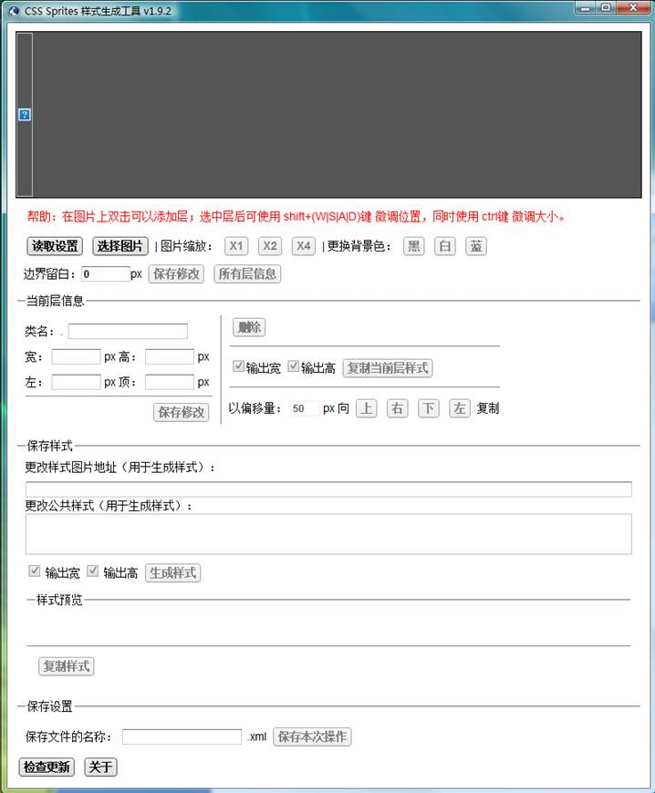
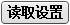
功能说明：读取已保存的设置文件(xml)
功能说明：选择要进行操作的图片，也可直接把图片拖入窗口。
在打开的图片上双击即可在当前位置建立一个层。
改变位置：有三种方式可以改变层的位置，分别是鼠标拖动；使用 shift+(W|S|A|D) 快捷键；在当前层信息的“左”、“右”输入框中输入需要的位置。
改变大小：有三种方式可以改变层的大小，分别是鼠标拖动层右下方的白点；使用 ctrl+shift+(W|S|A|D) 快捷键；在当前层信息的“宽”、“高”输入框中输入需要的位置。
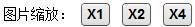
功能说明：选择图片后可用，可将图片进行2倍、4倍的放大。
1X 2X 4X
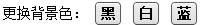
功能说明：选择图片后可用，可更改图片底色。默认为“黑”。
白 黑 蓝
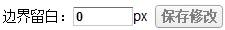
功能说明：修改图片可使用的负边界大小。默认为“0”。
5px 10px
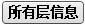
功能说明：列出所有层的信息。
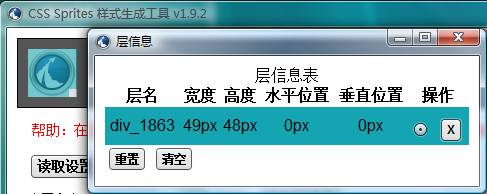
选择层，选中的层在主窗口预览区中会选中。
删除层，删除对应的层。
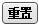重置所有层到默认位置。
删除所有层。
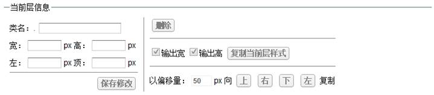
功能说明：选中层后可用。显示选中层的信息及相关的操作。
修改当前层信息：
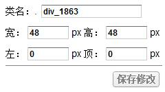=>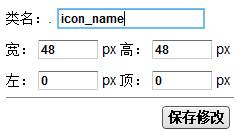
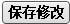保存当前所做的修改。
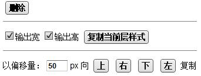
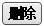删除当前层。也可使用“Delete”键。
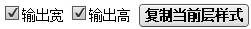复制当前层的样式，可选择是否输出宽高。
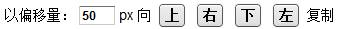
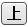以当前层为参照，在当前层上方距偏移量值的位置新建一个层。
以当前层为参照，在当前层右边距偏移量值的位置新建一个层。
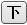以当前层为参照，在当前层下方距偏移量值的位置新建一个层。
以当前层为参照，在当前层左边距偏移量值的位置新建一个层。
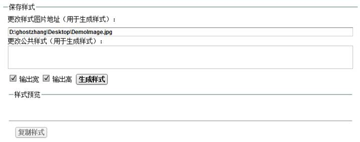
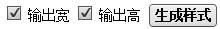生成当前操作结果的样式。可选择是否输出宽高。
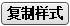生成样式后可用。复制已经生成的样式内容。
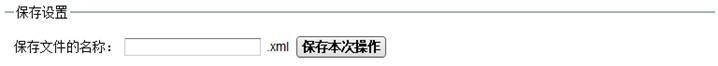
功能说明：保存本次操作到桌面。文件名称可定义。
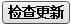检查是否有更新。默认自动更新天数为7天。
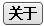版本说明。
bg2css v3.2.2 2019-2-17
(fix)更新证书，请重新安装
bg2css v3.2.1 2010-2-8
(add)复制当前大小
(add)复制提示优化
(add)从样式表导入
(add)多语言支持
bg2css v3.2 2010-2-3
(fix)拖动全选
(fix)使用快捷键修改位置和大小时无边界判定
(add)修改层配色
(add)优化改变位置的快捷键
(add)优化改变大小的快捷键
(add)优化图片缩放的快捷键
(add)更新当前图片
bg2css v3.1.2 2009-11-30
(add)“复制当前位置”
(fix)“操作区”位置挡到滚动条
(fix)复制坐标时没有“-”号
bg2css v3.1.1 2009-8-1
+‘选中层时显示“当前层信息”’为默认选中
(fix)当前层激活状态不正确
bg2css v3.1 2009-8-1
(fix)样式输出格式不统一
(fix)当图片太小是层大小判定错误
(fix)读取有边距的记录时层位置出错
bg2css v3.0 2009-6-16
+单独定义层的输出设置
+当前信息层显示设置
+更新所有层信息窗
(fix)新建层时不激活
(fix)读取设置后图片不能缩放
(fix)操作界面布局
bg2css v2.3 2009-6-2
+图片缩放增加快捷键
+新的程序图标
(fix)当前信息层会被层挡住
bg2css v2.2 2009-5-27
+优化操作界面，操作区扩展到整个窗口
+程序菜单
+右键菜单
(fix)数字输入框内容不容易选中
bg2css v2.1 2009-5-20
+窗口改变时保持当前层在窗口中
(fix)移动当前层信息框时当前层变灰
(fix)放大后载入新图层没有初始化
bg2css v2.0 2009-5-12
+优化操作界面
+放大时定位到当前层位置
+图片放大不消锯齿
+图片放大6倍（用于原图过小的情况，大图片慎用）
(fix)图片放大后添加层再缩小信息出错
bg2css v1.9.5 2009-5-2
(fix)保存时文件不能替换
bg2css v1.9.4 2009-5-2
+自定义保存路径
+单独复制宽、高、X坐标、Y坐标
+复制当前样式时类名可选择
(fix)修改默认层大小
(fix)拖入文件时检查类型
(fix)"关于"里的链接在浏览器窗口打开
bg2css v1.9.3 2009-4-14
+文件保存时覆盖提示
(fix)修改图片拖动响应区域
bg2css v1.9.2 2009-4-13
+图片背景色可改
+快捷键删除层
+拖动更改图片
bg2css v1.9.1 2009-4-12
(fix)支持中文路径
bg2css v1.9.0 2009-4-12
+复制当前层
(fix)读取设置后再保存出错
(fix)修改了部分界面
bg2css v1.8.2 2009-4-10
+公共样式部分可编辑
(fix)修改了部分界面
保存的设置文件增加一个项，请在之前保存的xml里的“imginfo”节点下手动增加一个“gbstyle”节点，值为“”.
bg2css v1.8.1 2009-4-9
+一定范围的负边界
+复制选中层的样式
(fix)输出0时的显示
保存的设置文件增加一个项，请在之前保存的xml里的“imginfo”节点下手动增加一个“margin”节点，值为“0”.
bg2css v1.8.0 2009-4-7
+复制样式
+层列表，以方便管理
bg2css v1.7.0 2009-4-1
+保存层位置信息
bg2css v1.6.0 2009-3-27
+边界验证
(fix)修改类名后放大失效
bg2css v1.5.1 2009-3-26
+图片放大培数可改
bg2css v1.5.0 2009-3-25
+图片放大预览
(fix)空值无验证
bg2css v1.4.1 2009-3-21
+支持快捷键
+在线更新
(fix)添加层时有bug：双负数
(fix)窗口滚动影响微调
(fix)值为0时输出为"-0px"
bg2css v1.3 2009-3-20
+输出样式时可选是否输出宽高
(fix)生成样式时最后一个类删除后生成有问题
(fix)样式路径自定义
bg2css v1.2 2009-3-19
+双击添加层
+层位置和大小微调
bg2css v1.1 2009-3-18
+修改类名
+修改层位置、大小
+重置层
+保存成样式文件
bg2css v1.0 2009-3-17
+添加、删除层
+拖动层、修改层大小
+显示层相关信息
+生成样式
+当前层样式